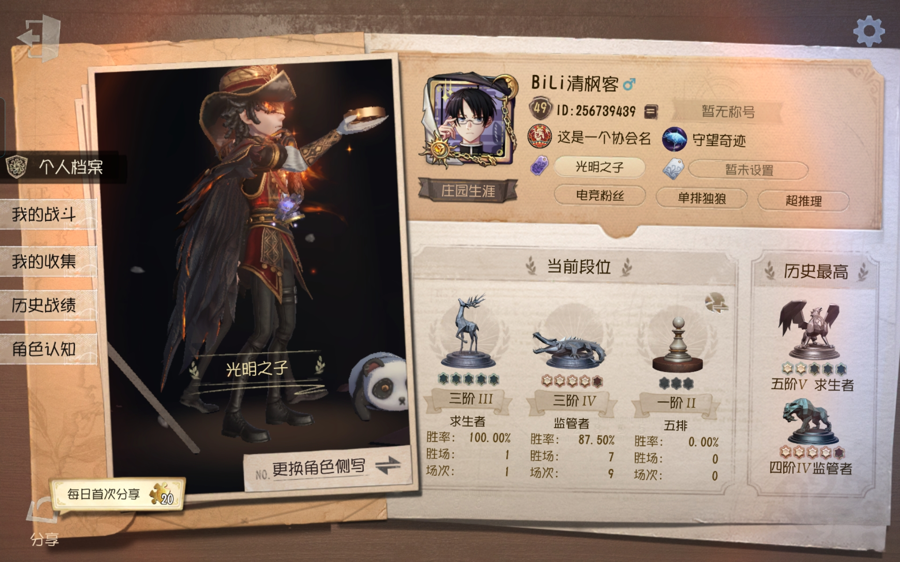
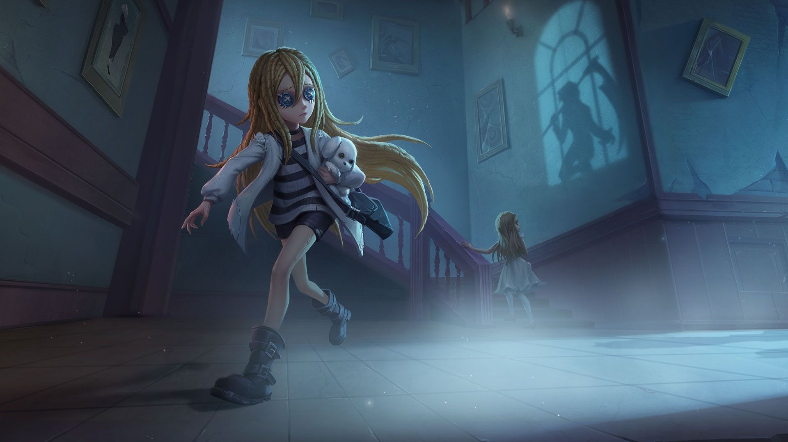
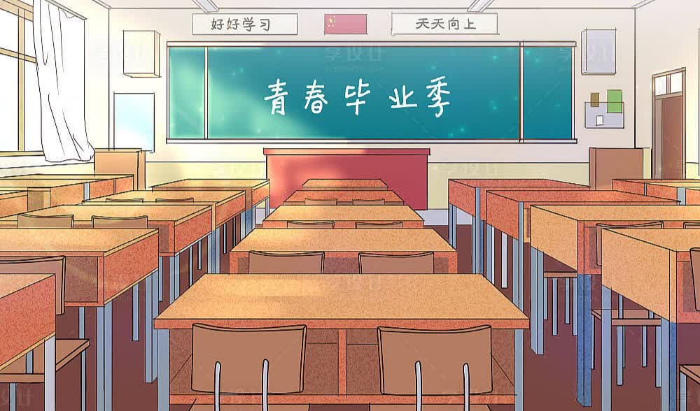

1.本站成功运行
2023年6月21日

本站于2023年6月7日成功运行啦！
首先感谢您能够抽出时间来访问我的博客。在这里，我会分享我的思考、经验和见解。
我希望通过我的博客能够给您带来一些灵感和启发，或者提供一些实用的知识和技巧。我会尽可能地写出优质的内容，让您在阅读中受益良多。
同时，如果您对我的博客有任何建议或者意见，欢迎随时联系我，让我们一起探讨和提高。您的反馈是我不断进步的动力。
最后，再次感谢您的光临，希望您可以在我的博客中获得所需的信息和乐趣。
2.我们毕业了
2022年11月3日
亲爱的朋友们，
在这个特殊的时刻，我想和你们分享我的感悟和祝福。初中的三年时光很快就结束了，我们即将面临分别的困境。虽然我们即将进入不同的高中，甚至可能要在不同的城市学习，但我相信我们的友谊将会长存。
在我们一起度过的这段时间里，你们给了我很多回忆和支持。我们在学习、运动、音乐和旅行等各种活动中都彼此陪伴。我很开心能认识你们，成为好朋友。
我们也有过抵触和争吵，但这些并没有影响我们的友情。我知道在大家分别后，生活会变得更加复杂和繁忙。但是，无论发生什么事情，我们都必须记住曾经在一起的美好时光，继续坚定地向前走。
我希望我们可以保持联系，在节假日和假期互相见面，聊天和玩耍。即使我们不能每周见面，我也会尽力通过社交媒体保持联系。最重要的是，永远珍惜彼此的友情和默契，彼此鼓励和支持。
最后，我想对你们每个人说句再见。相信我们友情的种子会在未来继续生长，今后我们还会聚在一起，谱写新的篇章。
永远是好朋友！
3.第五人格成就
2022年11月4日

我从一开始就喜欢玩第五人格，因此我每天都会花时间练习。我训练自己牵制监管者和击倒求生者，并学会如何最大限度地使用角色的技能。
到达第五阶是一个令人兴奋的时刻。在过去几个月的挑战中，我努力工作，终于推到了第五阶。在这个级别，游戏的策略变得更加重要，所以我加强了我的协作和思考能力。我学会了如何适应不同游戏情况和角色组合，并与其他求生者合作，保护我们的团队并赢得游戏。
当然，我也遇到了失利的时候。但是，我学会了从失败中吸取教训并不断改进自己的技能和策略。现在，我很自豪地站在五阶的高度，并期待着今后继续挑战自己。
4.乱是有迹可循的归宿
2023年3月18日

我毕业了，整理着乱七八糟的书堆。看着那些熟悉的封面和内容，我的思绪不由自主地回到了初中三年。我开始怀念那段青涩而美好的时光。
初中三年是我成长得最快、也最难忘的三年。虽然每天都得学各种各样的科目，但也总是感觉时间过得飞快。放学后和同学们一起在操场上尽情奔跑，在课间休息期间互相交流彼此生活琐事，甚至连被罚站这样的惩罚也让人想起来时感觉不乏幸福。
现在，我已经长大，开始拥有更多的责任和压力。整理书籍的过程并不轻松，但想到这些书一本本记录着我的成长历程和青涩的回忆，便让我心生一股温暖。这些书堆虽然看起来杂乱无章，但里面却包含我过去一段时光的点点滴滴。
或许，这种“乱”并不是一件坏事。在岁月的流逝中，我感到这乱也是一种归宿。这些书籍陪伴了我一路走来，记录下了我的成长历程。至少在这片乱七八糟的空间里，我感受到了生命中的那份温馨和归属感。
就让这些书继续放在原地吧，留作纪念，我把“乱”当成是寻找记忆的契机。这样做不仅轻松了我的心情，同时也让我对过去更加怀念，毕竟，那些难忘的日子也是我一生中珍贵的财富。